“¿Y si no tengo suficiente hueso?”
En Madrid Sur: la cirugía guiada aprovecha al máximo el hueso que tienes y, en muchos casos, evita injertos.
Seamos sinceros
Son las tres dudas más habituales en la consulta de implantes.
“¿Y si no tengo suficiente hueso?”
En Madrid Sur: la cirugía guiada aprovecha al máximo el hueso que tienes y, en muchos casos, evita injertos.
“Me da miedo la operación.”
En Madrid Sur: al estar todo planificado en 3D, la cirugía es más corta, con menos incisiones, menos dolor y recuperación más rápida.
“No sé cuánto me va a costar.”
En Madrid Sur: te damos el precio cerrado de todo el tratamiento antes de empezar, con financiación si la necesitas.
Para quien ha perdido dientes
Sabrás si puedes llevar implantes, cuántos necesitas, si hace falta injerto y cuánto cuesta todo. Con tu TAC 3D en la mano y sin pagar nada.
Quedan 12 plazas en este mes
Tu tranquilidad, por escrito
Como en nuestro Invisalign: precio cerrado, revisiones incluidas, sin sorpresas.
Cada implante se planifica en 3D antes de la cirugía. Nada se deja a la improvisación.
Más de 30 años y dos generaciones cuidando a las familias de Vallecas.
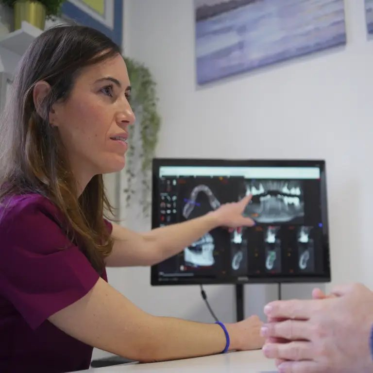
Una historia de familia
“Soy la segunda generación de dentistas desde que la clínica abrió en 1990.”Dra. Mercedes Fernández-Gianotti Pisani · Directora médica
La Dra. Pisani fundó Madrid Sur en 1990 y su hija ha continuado su legado con la misma pasión. Además de la dirección, ejerce como implantóloga tras formarse durante años en el Hospital La Paz de Madrid con los cirujanos maxilofaciales más reconocidos.
Pedir cita con la Dra. Pisani →Tratamientos
Un especialista dedicado en exclusiva a cada área. Elige lo que te preocupa y lo vemos en tu primera visita.
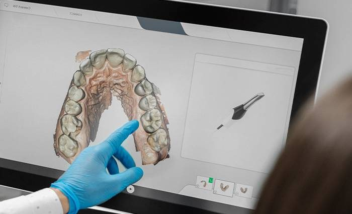
Escáner 3D y férula quirúrgica para colocar cada implante en la posición óptima.
Quiero valorar mi caso →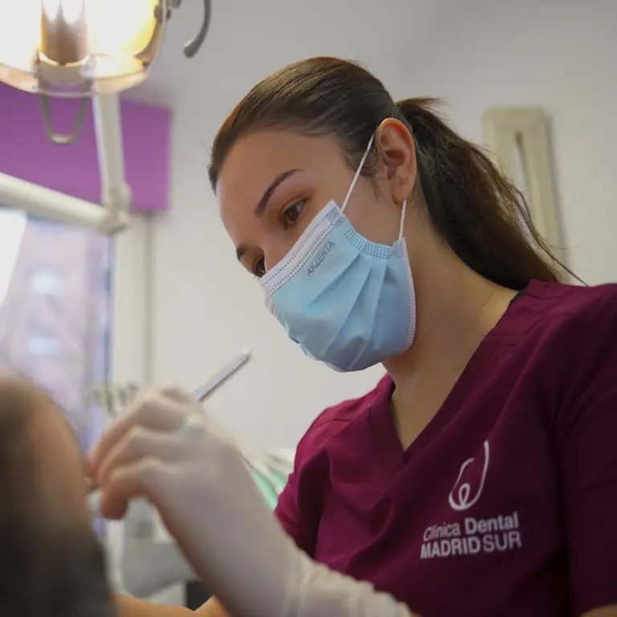
El Dr. Miguel Chaparro trata la gingivitis y la periodontitis para que conserves tus dientes.
Quiero valorar mi caso →Precio cerrado y todo incluido: sin límite de alineadores, revisiones y retenedores gratis.
Reservar valoración →Carillas, coronas de zirconio y blanqueamiento.
Reservar valoración →Prótesis fijas, removibles y sobredentaduras sobre implantes.
Reservar valoración →Cuidamos la salud oral de los menores de 12 años.
Reservar valoración →Casos reales de la clínica
Casos reales de implantes de la clínica Madrid Sur.
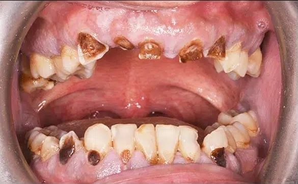
Antes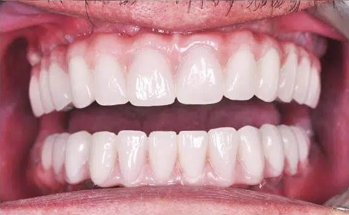
Después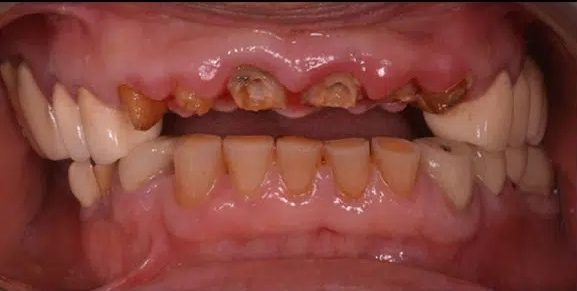
Antes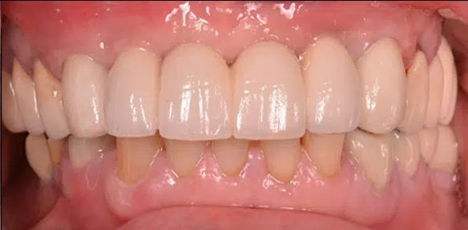
Después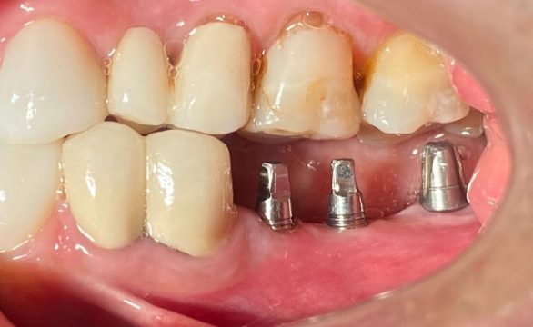
Antes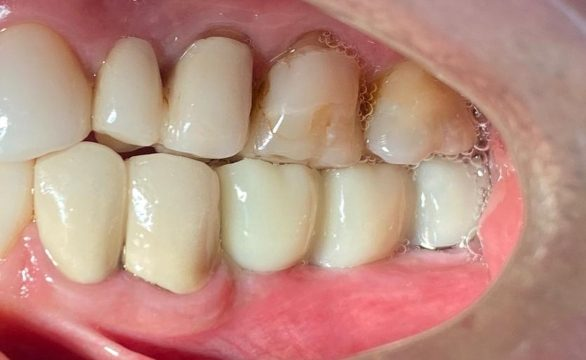
DespuésQuién te va a atender
Cada dentista del equipo se dedica en exclusiva a su especialidad.
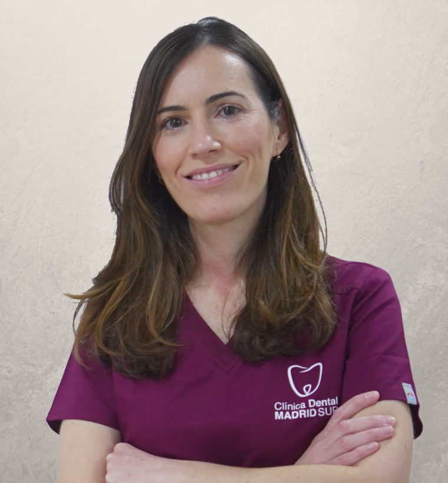
Directora médica · Implantología
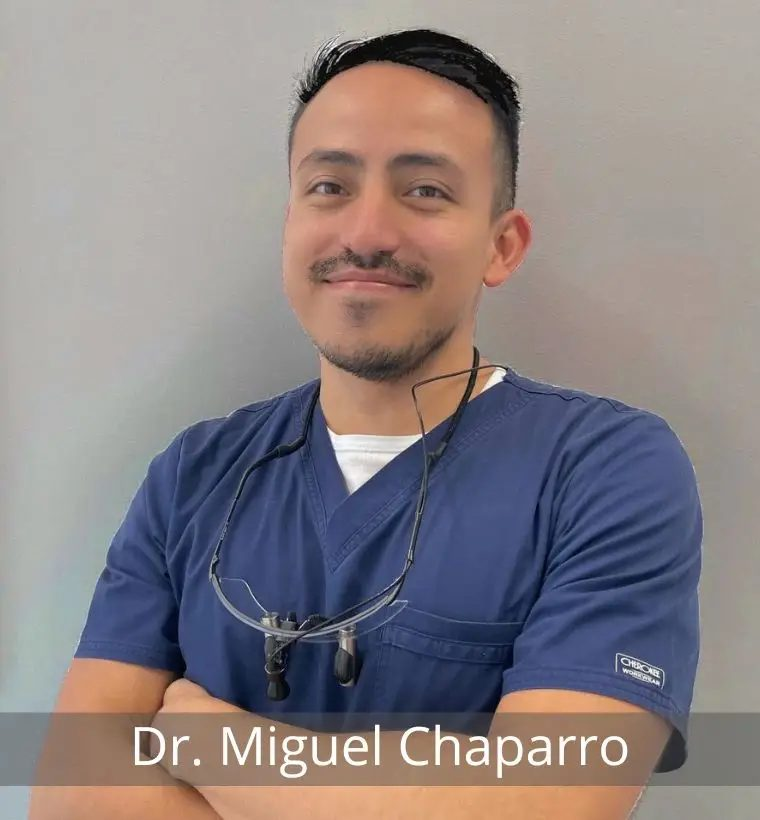
Periodoncia y cirugía guiada
Ortodoncia y odontopediatría
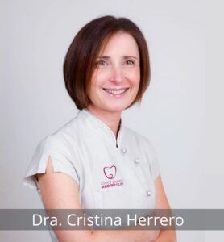
Endodoncia
Así de fácil
Elige día y hora online o llámanos. Te confirmamos la cita por teléfono.
La Dra. Pisani estudia tu TAC 3D contigo y te enseña cómo se colocarán tus implantes.
Te llevas tu plan por escrito con el precio total y la cuota mensual. Sin presión y sin letra pequeña.
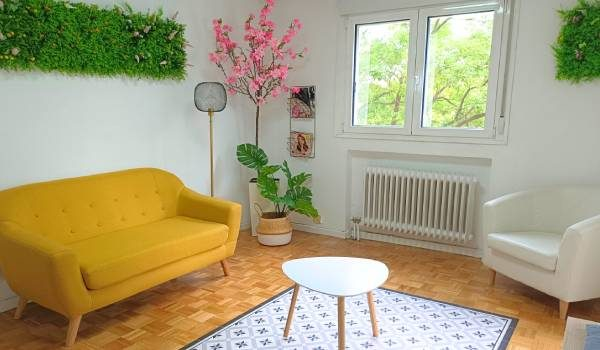
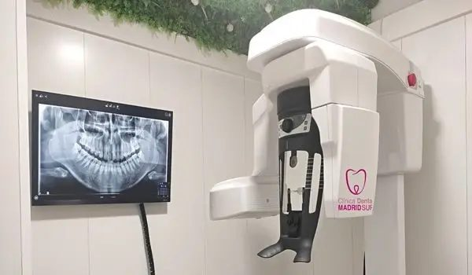
La clínica
Un espacio cálido, con la tecnología de diagnóstico que necesitan los tratamientos de hoy.
Financiación
Que el dinero no sea la razón para posponer tu salud. Calcula aquí cuánto pagarías al mes y en tu primera visita te damos la cifra exacta.
Financiación sujeta a aprobación de la entidad financiera. Cálculo orientativo sin intereses.
Opiniones reales
“Mi padre tenía la boca fatal, y le han puesto implantes, y ahora ya puede comer de todo. Desde el principio nos transmitieron mucha confianza, con un precio muy ajustado.”
“Me entra ansiedad cuando tengo que ir al dentista. El Dr. Miguel Chaparro, un 10 como profesional y persona, explicándome con paciencia cada detalle. Volveré siempre.”
“El trato es inmejorable tanto de recepción como de los doctores. Me han hecho una extracción de muela compleja y la doctora ha sido de 10. Recomiendo esta clínica calidad/precio.”
Preguntas frecuentes
¿Tienes otra duda? Llámanos al 913 800 158 y te la resolvemos en un minuto.
No hay trampa. Preferimos que nos conozcas sin riesgo: si te gusta cómo trabajamos, te quedarás con nosotros muchos años. Incluye valoración con la Dra. Pisani, TAC dental 3D y planificación con precio cerrado.
Precio cerrado y todo incluido: sin límite de alineadores, todas las revisiones y retenedores gratis.
Planificamos el implante en el ordenador con tu TAC 3D y lo colocamos con una férula a medida. Es más precisa, más corta y con menos molestias.
No. Te llevas tu plan y tu presupuesto por escrito y decides tú, cuando quieras. Sin llamadas insistentes.
Sí. Ofrecemos financiación, sujeta a aprobación. En la primera visita te calculamos tu cuota exacta.
Atendemos con cita previa. Puedes elegir día y hora directamente en esta web y te llamamos para confirmarla.
Reserva online · 1 minuto
Quedan 12 plazas en este mes
Horario: con cita previa
¿Prefieres llamar? 913 800 158 · WhatsApp 601 397 854
Horario online
Horario actualizado en tiempo real (hora de Madrid). Y aunque estemos cerrados, puedes reservar tu cita online las 24 horas: te la confirmamos en cuanto abramos.
Festivos nacionales cerrado. Citas con cita previa.
Dónde estamos
Antes de irte
Valoración, TAC 3D y planificación con precio cerrado por 0 €. Quedan 10 plazas en este mes.
Sí, quiero mi plaza